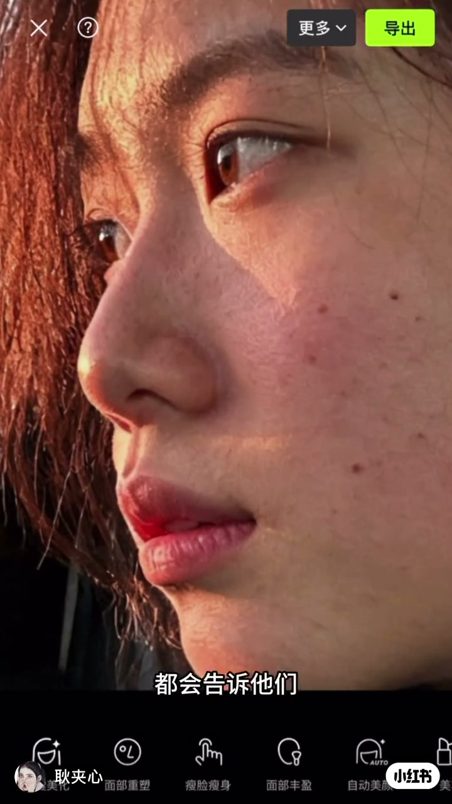
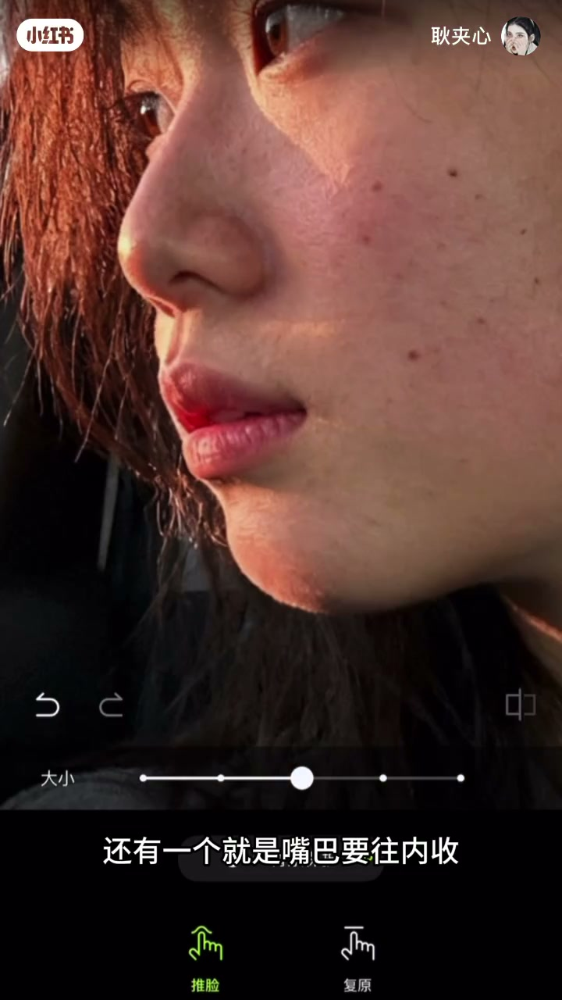
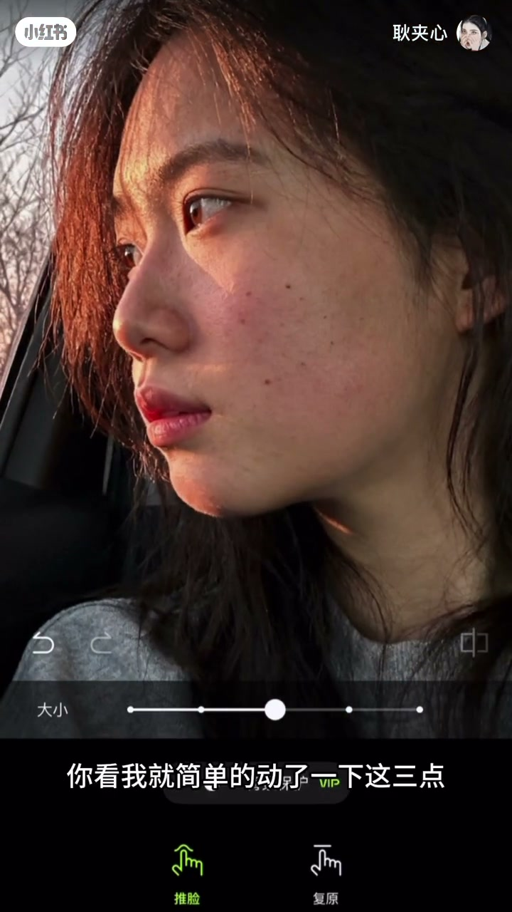
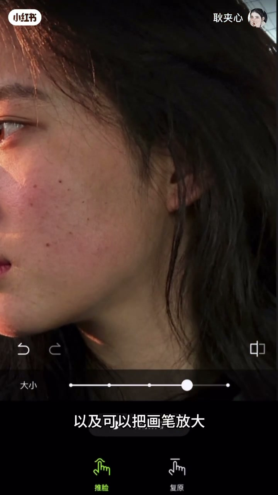
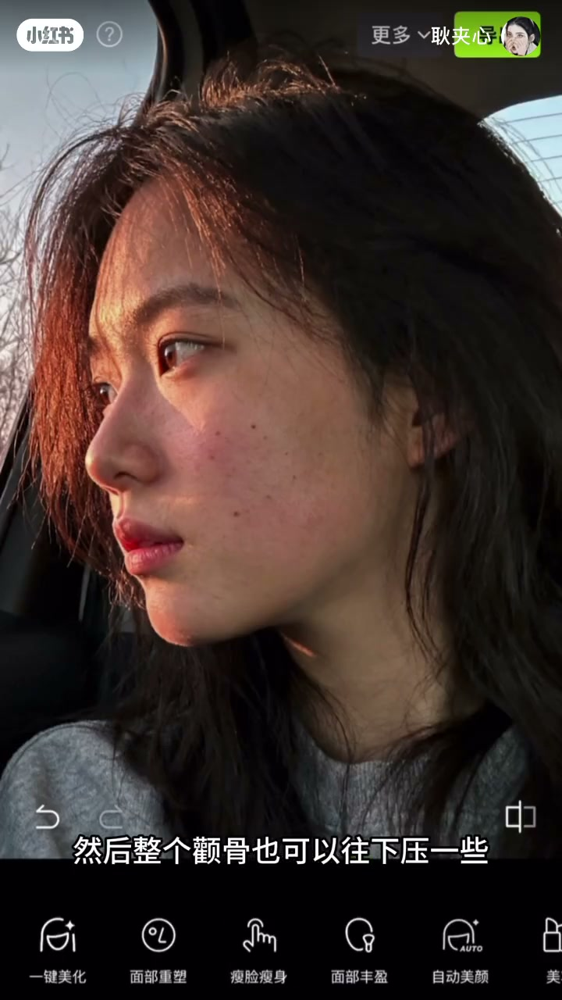

内容要点
「耿夹心骨相修图课」强调侧脸骨相其实很简单：凸嘴往内收、后缩下巴往左下轻轻带出（勿过量以免反颌月亮脸）、下颌角上提、头发推蓬松做头包脸，再微调眼位与颧骨。全程强调「动三点就够、变化别太大」。
知识结构
嘴内收；下巴后缩则左下带出一点；三处微动即明显好看。
下颌角上提更清晰；头发推蓬松增加遮脸/头包脸。
眼睛右下带一点；颧骨下压；再用眉眼晕染类功能收细。
真骨相是少量、对点的结构位移，不是整脸拉成另一个人。
00:00-01:20收嘴、带下巴、提下颌角
开场「修侧脸非常简单」。嘴巴凸就往内收；下巴后缩时往左下方拉出一点，但警告拉太多会有反颌月亮脸感——「带出来一点就行」。作者说只动三点，已经比原图好看很多，却没有变化夸张。
下颌角往上提拉，让下颌更清晰；再把头发推蓬松，做出头包脸，增加面部被发势「包住」的高级感。



01:20-01:59眼颧微调与眉眼晕染
若要再加精致度：眼睛往右下方带一点点，颧骨往下压一些，避免中面部过抢。
最后用自动眉眼/晕服（ASR）类功能柔化眉眼过渡。整段逻辑是：结构点位少而准，再补发势与局部精致度。


完整转录（24段）
以下文本由 Whisper medium 模型自动转录，可能存在少量识别误差，已尽可能修正。
其实修侧脸非常简单
嘴巴要往内收
因为嘴巴是凸的嘛
要往内收一些
下巴的话
后缩的话我们可以往左下方去拉出来
但是记住不要拉得太多
要不然会有点反核月亮脸的感觉
就是把这一块往左下方去带出来一点就行
但是也不用动得太多
你看我就简单的动了一下这三点
它是不是就比之前要好看很多
但是又没有说变化特别大
然后下和角的话需要往上去提拉一些
显得我们脸的下和角更清晰
以及可以整个脸
那时候增加一下面部遮脸度
整个头发推蓬松一些
就让它有头包脸的感觉
接著如果想要增加精致度
就可以把眼睛往下
右下方带一点点
然后整个颧骨也可以往下压一些
再去用自动眉眼用这个晕服的功能